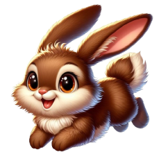
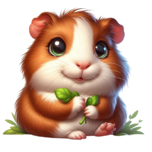
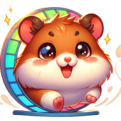
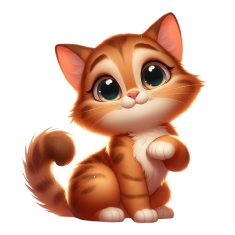

Descubra a diversidade dos animais domésticos;
Junte-se a nós nesta jornada divertida e cheia de descobertas, explorando o encanto de cada animal.
Descubra a diversidade dos animais domésticos;
Junte-se a nós nesta jornada divertida e cheia de descobertas, explorando o encanto de cada animal.
COELHO
• São Sociáveis
• São Saltitantes
• Possuem uma boa memória
• Adoram cavar buracos e comer cenouras.
PORQUINHO DA INDIA

• Timidos e Dóceis
• Adoram Roer
• inteligentes e adaptáveis
• Dormem de olhos abertos
HAMSTER

• São extremamente organizados e limpinhos
• Guardam suas comidas nas bochechas
• São ótimos atletas
CACHORRO
• Cachorros são os melhores companheiros
• Focinho detetive, possui um ótimo olfato
• Possuem otima audição por conta de suas orelhas
GATO
• São Preguiçosos porem Inteligentes
• Gostam de dormir e muito
• Gostam de Miar bastante